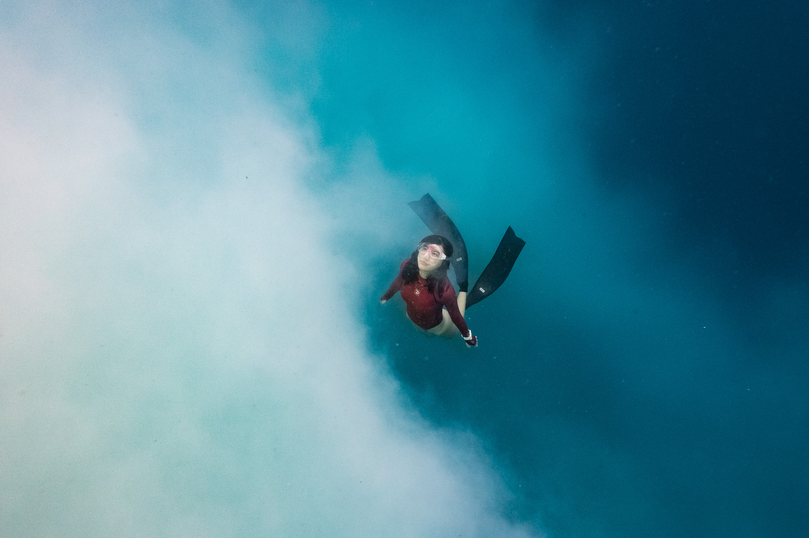

關於耳壓這檔事 !

編輯部 2020/07/01
潛水的人，不管是初學者還是老手，經常都還是會碰到耳壓難以平壓的狀況。為什麼需要做平壓呢？因為在水下，每下潛10公尺就會增加一個大氣壓，這是一個很急遽的壓力變化。舉個例子來說，飛機飛到高空的時候大概會降到0.9個大氣壓，如果長程飛機會飛得更高，大概也只會降到0.8個大氣壓左右。也就是說搭乘飛機時光這0.1-0.2個大氣壓的變化，有人耳朵就會不舒服了，更何況潛水只要1、2公尺就有這樣的壓力變化，而且變化速度更快。
【PADI 終極技巧 – 熟能生巧】
相信在剛接觸潛水，特別是在水下做耳壓平衡的時候，許多童鞋都覺得有一定難度。但是 PADI 提醒大家，耳壓平衡技巧，可是你可以隨時隨地，想練就練的水肺潛水技巧喔。所以沒有藉口，建議大家在閒暇時可以站在鏡子前練習，方便你觀察自己的咽喉部肌肉運動。